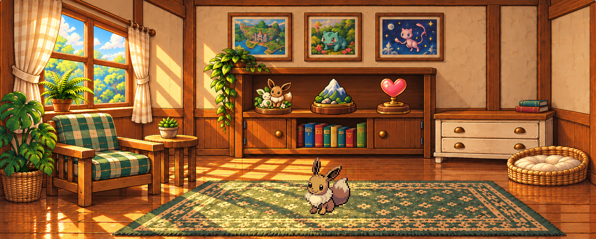
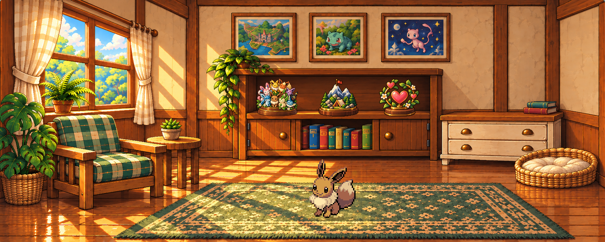

Итоговая комната
Фиксированная детальная сцена и независимые заработанные трофеи. Карниз следует оконной раме, комод рядом со шкафом. Полный магазин декора исключён.

Смена трофеев
Меняются только отдельные награды. Здесь Иви показан одним исходным кадром. Полная смена мебели для исправленной сцены не заявляется.
Поздние трофеи

Все26 карточек активного альбома · Закрытые силуэты · Итоговые статичные экраны
56 внешних видов наград,10 цепочек и16 самостоятельных целей. Приложение не менялось; художественный пакет и правила готовы к внедрению.